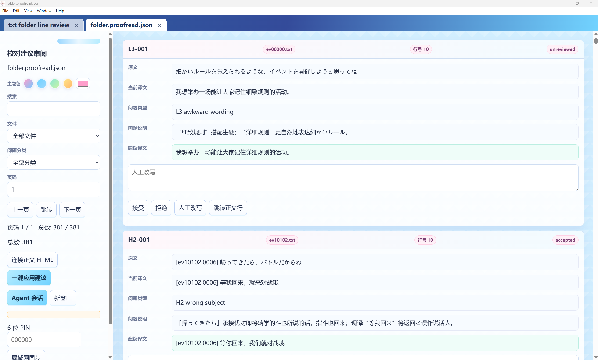

Your first YN project
中文 · Project · Full settings
These instructions describe 2.2.0. Try a small sample before a whole novel or game-text batch.
Download and model
Get the Windows installer or portable build from Releases. Configure the provider, model and authorization at the top of the start page. External agents use this same YN configuration.
Create the project
Choose the source and project location. TXT supports files, folders and alternating bilingual lines. EPUB is extracted to working text; PDF requires selectable text. Original inputs remain read-only.
Set the language direction and one project style. Defaults are 500 lines per chunk and up to 3 child agents. Worker counts are concurrency ceilings.
Glossary and characters
Prepare existing terminology, character records and notes before translation. Reference preparation can create a project without existing translated text, uses editable drafts, checks them and commits formal assets. Tables can later be viewed, edited and deleted from HTML.
Start translating
The preparation shortcut checks settings against the text, samples preservation candidates, trials rules, then opens HTML and uses the same parameters and prompt as manual startup. Generate HTML first when you want to adjust settings yourself and invoke AI selectively.

A preservation regex protects its actual matched positions. Inspect examples so a prefix rule does not lock dialogue. Prose outside matches still needs translation. Explicitly untranslated names can be confirmed source-to-identical-target terms in the formal glossary.
Existing translations
Bind a translation aligned with the source. Reuse mechanically screens old rows, semantically audits risky ones, then asks for one batch decision. Accepted rows remain; only actual retranslation debt goes back to translation. Resolve binding or line-count mismatches first.
Proofread and write
Proofreading requires an existing translation. Split review checks each owned row; Monte Carlo uses stratified sampling and is not exhaustive proofreading.

Auto-apply affects HTML only. Review the result, then write TXT or batch-write files; EPUB/PDF have export controls. Candidate refresh, HTML editing and final file output are separate operations.
PDF, code and formulas
Use text-layer PDFs. Host-prefilled code/math stays locked; models translate prose only. Vision models see images on demand. PDF export uses the current HTML translation and reports text overflow rather than cutting it. See the PDF guide for scanned pages, reading order, inseparable content and output-format limits.
Stop and move projects
Stop and wait for cleanup before closing or moving files. Resume verifies drafts and proof before model calls. Restore missing bound files rather than repeatedly asking the model to retry. Internal bindings resolve relative to the project root; transfer and rebind external sources, PDFs and references too.
Phones and LAN
Enable desktop LAN sharing, set a PIN and open the displayed address on the other device. Edit translations, review suggestions and use the same Agent session while desktop YN stays running. Public tunnels are external tools; protect the PIN and address.
External agents in the background
Give Codex or another agent the official Agent API guide. It must show location, model and full settings, wait for user confirmation, then prepare and start. The API is local stdio with a launcher, not a public network service. It uses YN's configured model, not the external agent's chat model.